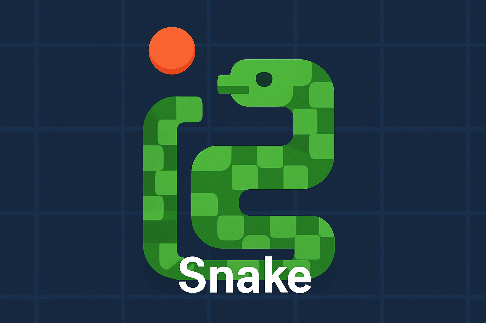
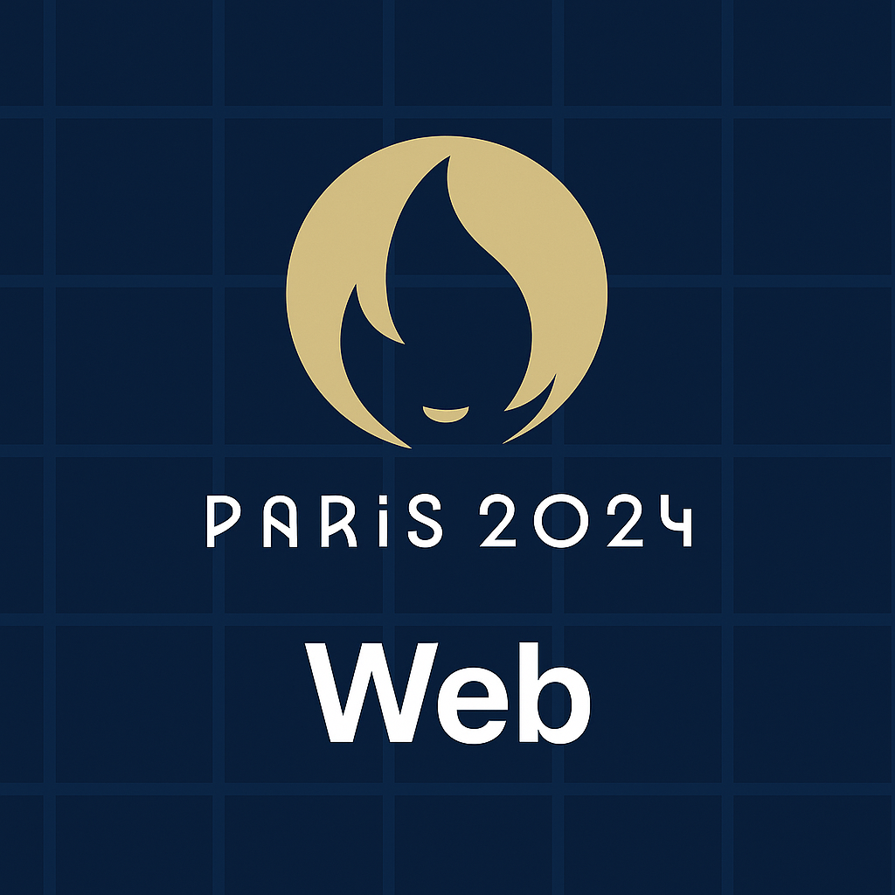
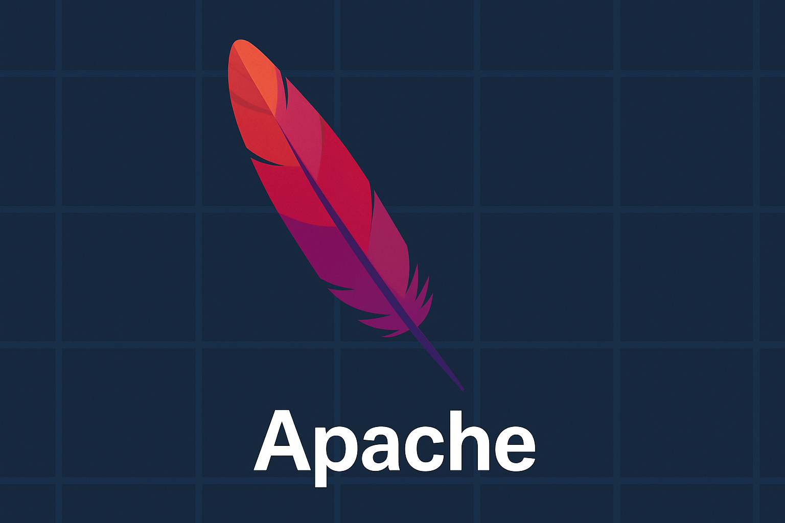

KAELIG HILAIRE
Mon Parcours

Baccalauréat
- Lycée Chaptal
- Saint-Brieuc
- 2021-2024
- Bac technologique STI2D spécialité SIN (Science de l'informarique et du numérique) obtenu en 2024
BUT
- IUT de Lannion
- Lannion
- Début en septembre 2024
- BUT Informatique
Mes Compétences
Réaliser un développement d'application
- AC 1 : Implémenter des conceptions simples
- AC 2 : Elaborer des conceptions simples
- AC 3 : Faire des essais et évaluer les résultats en regard des spécifications
- AC 4 : Développer des interfaces utilisateurs
Travailler dans une équipe informatique
- AC 1 : Apréhender l"écosystème numérique
- AC 2 : Découvrir kes aptitudes requises selon les différents secteurs informatiques
- AC 3 : Idientifier les statuts, les fonctions et les rôles de chaque membre d'une équipe pluridisciplinaire
- AC 4 : Acquérir les compétences interpersonnelles pour travailler en équipe
Conduire un projet
- AC 1 : Appréhender les besoins du client et de l'utilisateur
- AC 2 : Mettre en place les outils de gestion de projet
- AC 3 : Identifier les acteurs et les différentes phases d'un cycle de développement
Gérer des données et de l'information
- AC 1 : Mettre à jour et interroger une base de données relationnelles
- AC 2 : Visualiser des données
- AC 3 : Concevoir une base de données relationnelle à partir d'un cahier des charges
Administrer des systèmes informatiques communiquants complexes
- AC 1 : Identifier les différentes composantes
- AC 2 : Utiliser les fonctionnalités de base d'un système multitâches
- AC 3 : Installer et configurer un système d'exploitation
- AC 4 : Configurer un poste de travail dans un réseau d'entreprise
Optimiser des application informatiques
- AC 1 : Analyser un problème avec méthode
- AC 2 : Comparer des algorithmes pour des problèmes classiques
- AC 3 : Expérimenter la notion de compilation et les représentations
Mes Projets

Snake
- Language : C
- Description : Ce projet nour à demandé de créer un jeu de Snake dans un terminal Linux. Nous avons ensuite dû l'autonomiser et l'oprimiser en binômes.

Page Web JO 2024
- Language : HTML/CSS
- Description : Par groupes de 3 ou 4 étudiants, nous avions pour tâche de créer un site web sur une discipline présente aux Jeux Olymmpiques de Paris en passant par une étude des besoins et un maqsuettage avant de commencer à créer les pages.

Réseau
- Language : PHP / SQL / Bash
- Description : En groupes de 3 ou 4 étudiants nous avons dû configurer un serveur Apache servant à héberger un site localement.